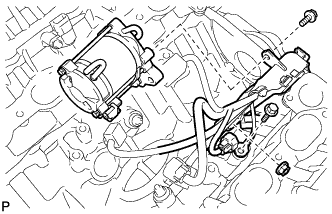
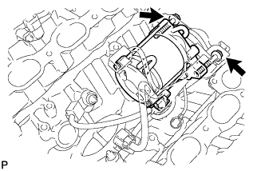

STARTER (for 1.4 kW Type) > INSTALLATION |
| 1. INSTALL STARTER ASSEMBLY |
 |
Connect the starter wire with the nut.
Connect the starter connector.
Connect the starter to the cylinder block.
Connect the ground wire with the bolt.
Connect the engine wire protector to the starter with the bolt.
 |
Install the starter with the 2 bolts.
| 2. INSTALL REAR WATER BY-PASS JOINT |
  |
Install 2 new gaskets and the water by-pass joint with the 4 nuts.
| 3. INSTALL NO. 1 AIR SWITCHING VALVE ASSEMBLY (w/ Secondary Air Injection System) |
 |
Install a new gasket and the No. 1 air switching valve to the rear water by-pass joint with the 2 bolts.
Connect the vacuum switching valve hose to the No. 1 air switching valve.
| 4. INSTALL NO. 2 AIR SWITCHING VALVE ASSEMBLY (w/ Secondary Air Injection System) |
 |
Install a new gasket and the No. 2 air switching valve to the rear water by-pass joint with the 2 bolts.
Connect the vacuum switching valve hose to the No. 2 air switching valve.
| 5. INSTALL NO. 3 AIR TUBE (w/ Secondary Air Injection System) |
 |
Install a new gasket and connect the No. 3 air tube to the exhaust manifold with the 2 nuts.
Install a new gasket and connect the No. 3 air tube to the No. 2 air switching valve with the 2 bolts.
| 6. INSTALL AIR TUBE SUB-ASSEMBLY RH (w/ Secondary Air Injection System) |
 |
Install a new gasket and connect the air tube to the exhaust manifold with the 2 nuts.
Install a new gasket and connect the air tube to the No. 1 air switching valve with the 2 bolts.
| 7. CONNECT NO. 1 WATER BY-PASS PIPE (w/o Air Cooled Transmission Oil Cooler) |
 |
Connect the water by-pass pipe to the cylinder head cover RH with the 2 bolts.
| 8. INSTALL NO. 2 AIR INJECTION SYSTEM HOSE (w/ Secondary Air Injection System) |
 |
Install the hose.
| 9. INSTALL WATER BY-PASS PIPE SUB-ASSEMBLY |
Apply soapy water to the O-ring.
Install a new O-ring to the water by-pass pipe.
 |
Push in the water by-pass pipe.
Install the water by-pass pipe with the bolt.
Connect the 2 vacuum switching valve hoses to the water by-pass pipe clamp.
Connect the wire harness clamp.
Connect the connector.
| 10. INSTALL INTAKE MANIFOLD |
Install the intake manifold (Click here).
| 11. CONNECT CABLE TO NEGATIVE BATTERY TERMINAL |